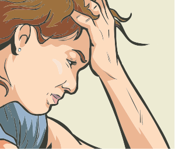

Os sintomas da doença são geralmente silenciosos nas fases iniciais, mas podem incluir fadiga, desconforto abdominal e perda de peso não intencional em casos mais avançados. O diagnóstico muitas vezes começa com exames de sangue que avaliam a função hepática e pode envolver métodos de imagem, como ultrassonografia, ressonância magnética ou tomografia computadorizada, para confirmar a presença de gordura no fígado.

Clique na prancheta e veja os tipos de tratamentos.